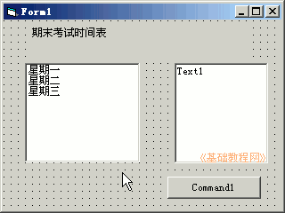
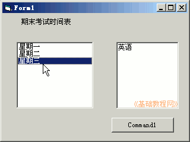

2011-2012 第一学期九年级 VB 教学课程设计
作者：TeliuTe 来源：基础教程网
十七、学会列表框 返回目录 下一课学习目标：学会使用列表框；
注意事项：按回车键添加，再重复操作；
1、绘制控件
1）打开一个标准EXE，绘制一个标签，一个文本框，一个按钮，一个列表框
Label1的Caption属性改为“期末考试时间表：”
2）设置好控件的字体和颜色；

3）进入代码窗口，点击对象下拉列表，依次选择“List1、Command1”，在出来的代码段中分别输入；
4）保存为“第十七课”，点菜单“运行－启动”，点击列表框中的选项；

课后记：
准备了没上本节学习了列表框的基础知识，如果你成功地完成了练习，请继续学习下一课内容；
本教程由86团学校TeliuTe制作|著作权所有
基础教程网：http://teliute.org/
美丽的校园……
转载和引用本站内容，请保留版权信息和本站链接。